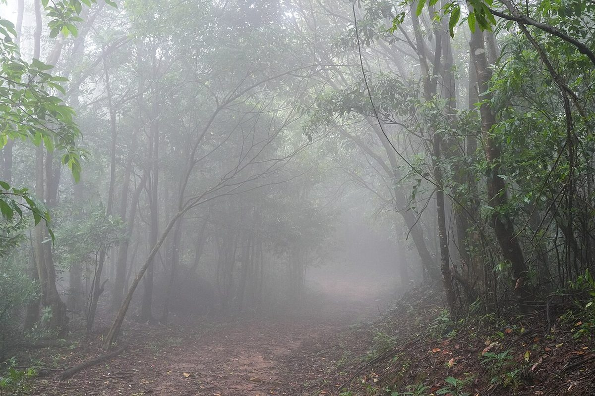
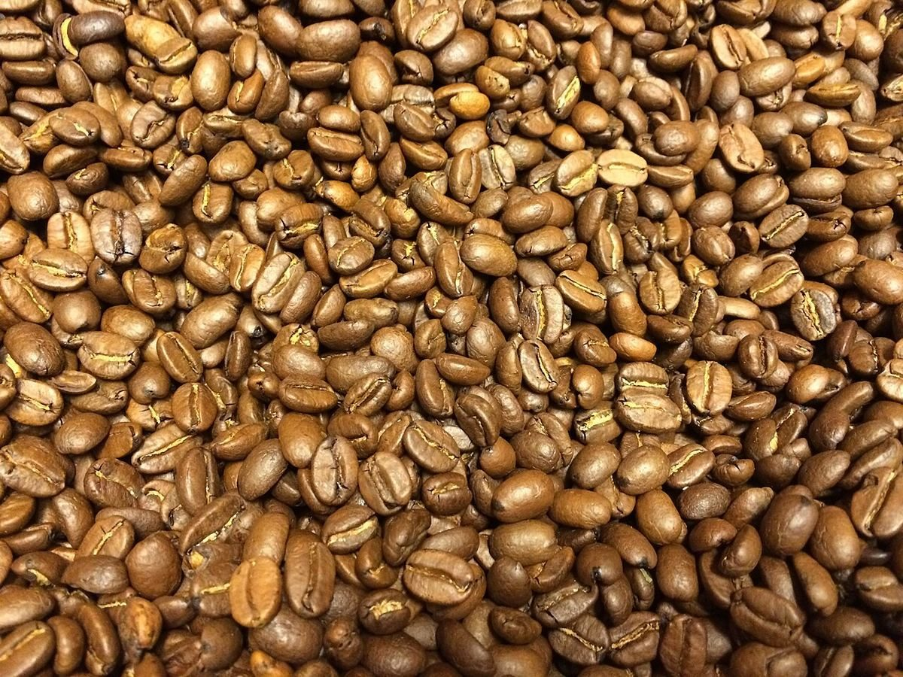
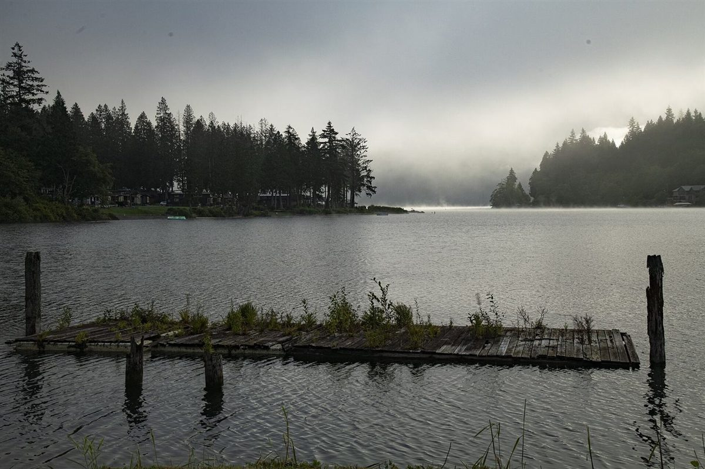

鹿鳴堂あんとコーヒー
制作側の連想
「鹿鳴堂」の鹿は、二つに割れた足跡を残す。
制作側は、屋号の「鹿」の字から山あいの小径に残る鹿の足跡を連想しました。鹿のひづめは二つに割れていて、足跡も二つ並びです。そこで、屋号にある二つの言葉「あん」と「コーヒー」を、このサイトでは二つ並びの足跡として見立て、ページを一歩ずつ進める作りにしています。これは制作側の連想で、お店の理念・由来とは無関係です。お店が実際に何を出しているかも、ここでは断定していません。
ふたつの指
左右に割れた、二拍の足跡。
写真は三豊市仁尾町や実際のお店のものではありません。二つの言葉の雰囲気を伝えるための、国外・撮影地不明のフリー素材です。
あん
国外のイメージ(ロシア)
屋号の前半。やわらかな霧の朝のような、ひと呼吸ぶんの余白(イメージ)。
コーヒー国外のイメージ(スウェーデン)

屋号の後半。深い色の豆を思わせる、もうひとつの指(イメージ)。
足跡の道
五歩で、このサイトをひとまわり。


ご案内
お店のこと(確認できたものだけ)
| 所在地 | 〒769-1404 香川県三豊市仁尾町仁尾乙266-3 |
|---|---|
| 電話 | なし |
| 営業時間 | 準備中 |
| 定休日 | 準備中 |
| ご予約 | 準備中 |
| 駐車場 | 準備中 |
| SNS | Instagram @rokumeido |